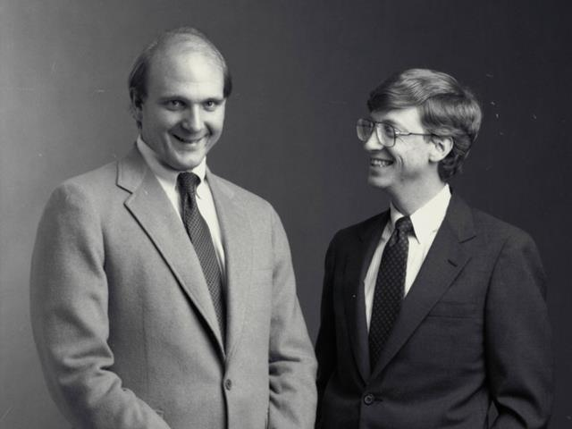
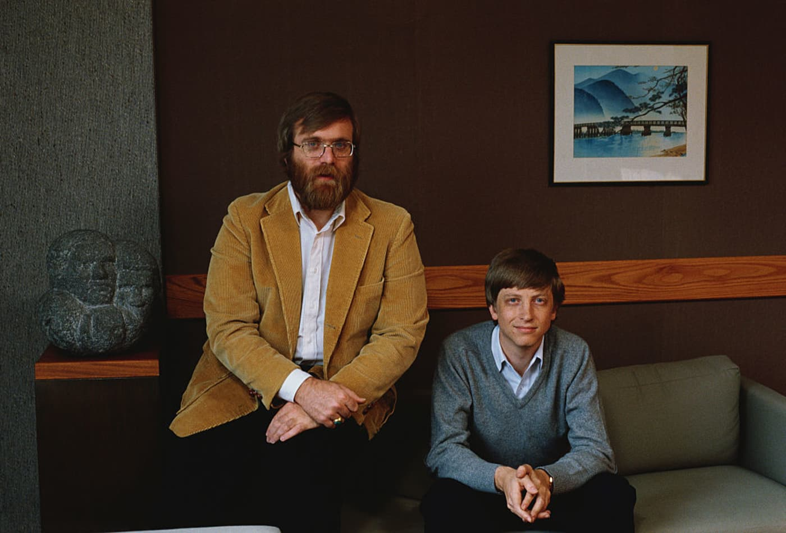
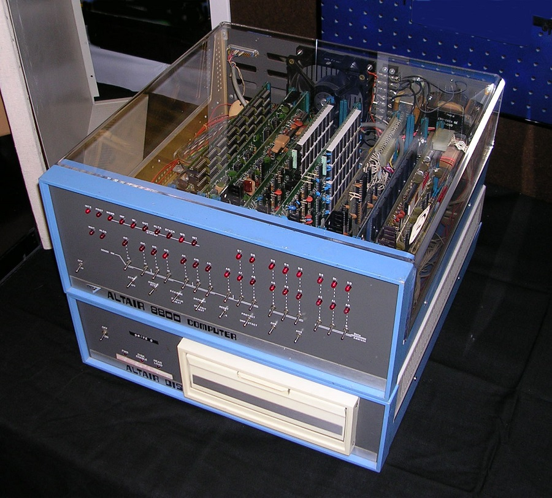
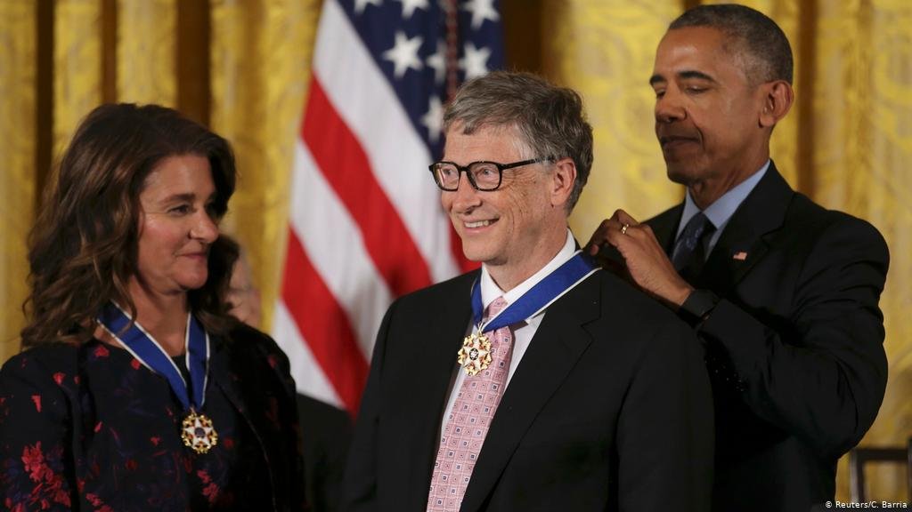

SƠ LƯỢC VỀ BILL GATES
*Giai đoạn trước khi sáng lập Microsoft
- Bill Gates (tên thật là William Henry Gates III) sinh ngày 28/10/1955 tại Seattle, Washington, Hoa Kỳ. Ông là con trai của ông William Henry Gate Sr (1925 – 2020) và bà Mary Maxwell Gates (1929 – 1994). Cha ông là một luật sư nổi tiếng và mẹ ông phục vụ trong ban giám đốc của First Interstate BancSystem và United Way of America. Ông ngoại của Gates là JW Maxwell, chủ tịch ngân hàng quốc gia. Gates có một chị gái Kristi (Kristianne) và một em gái Libby.
- Năm 13 tuổi, ông vào học trường Lakeside, một trường dự bị cho các học sinh giỏi. Đây là nơi ông viết chương trình phần mềm đầu tiên của mình. Tại đây ông đã bỏ các lớp toán để theo đuổi sở thích của mình, Bill Gates thấy thích thú khi lập trình trên máy tính của GE bằng ngôn ngữ BASIC. Ông đã viết chương trình đầu tiên trên máy tính này, đó là các thao tác của trò chơi tic-tac-toe cho phép người chơi thi đấu với máy tính.
- Khi quỹ của hội phụ huynh đã hết, ông và các học sinh khác chuyển sang các hệ máy tính khác bao gồm máy tính mini PDP của hãng DEC. Hãng Computer Center Corporation (CCC) sáng chế ra PDP–10 đã cấm bốn học sinh trường Lakeside bao gồm Bill Gates, Paul Allen, Ric Weiland, và Kent Evans sử dụng hệ máy tính này trong mùa hè sau khi bốn người này đã khai thác các lỗi trong hệ điều hành để nhận được thêm thời gian sử dụng hệ máy tính này.
- Khi hết hạn cấm, bốn học sinh đề nghị với công ty CCC là họ sẽ tìm các lỗi trong phần mềm của CCC và đổi lại họ được sử dụng các máy tính của công ty này. Thay vì sử dụng các hệ thống thông qua điện báo, Gates đã đến văn phòng CCC và nghiên cứu mã nguồn cho các chương trình khác nhau chạy trên hệ thống, bao gồm cả chương trình trong FORTRAN, LISP, và ngôn ngữ máy. Việc thỏa thuận với CCC bị kết thúc vào năm 1970, khi công ty này bị phá sản. Một năm sau, Information Sciences, Inc. đã thuê bốn học sinh trường Lakeside để viết một chương trình trả lương bằng ngôn ngữ COBOL, cho phép họ có thời gian sử dụng máy tính và bản quyền phần mềm của công ty. Sau khi những người quản lý ở trường biết được khả năng lập trình của ông, Bill đã được giao nhiệm vụ viết một chương trình lập thời khóa biểu cho các lớp học. Ông đã sửa các mã sao cho chương trình sắp xếp ông vào các lớp có nhiều nữ sinh nhất. Sau này ông nhật xét : "Thật khó có thể tách tôi ra khỏi máy tính mà rõ ràng tôi có thể chứng minh sự thành công từ nó" (Câu nói gốc của ông là : It was hard to tear myself away from a machine at which I could so unambiguously demonstrate success). Lúc 17 tuổi, Gates lập kế hoạch kinh doanh với Allen đó là Traf-O-Data nhằm đếm lưu lượng giao thông dựa trên bộ xử lý Intel 8008.
-
Gates tốt nghiệp trường Lakeside vào năm 1973. Ông đạt được 1590 trên 1600 điểm ở kỳ thi SAT và ghi danh vào Đại học Harvard
trong mùa thu năm 1973. Khi học ở Harvard, ông đã quen Steve Ballmer, người sau này kế vị chức CEO của Microsoft.
Figure 1. Bill Gates và Steve Ballmer thời còn trẻ - Gates đã nghĩ ra một thuật toán để phân loại bánh kếp như một giải pháp cho một trong một loạt các vấn đề chưa được giải quyết do giáo sư Harry Lewis trình bày trong một lớp học tổ hợp. Giải pháp của ông đã giữ kỷ lục là phiên bản nhanh nhất trong hơn 30 năm và người kế nhiệm của nó nhanh hơn chỉ 2%. Giải pháp của ông được chính thức hóa và xuất bản với sự cộng tác của nhà khoa học máy tính Christos Papadimitriou của Harvard.
-
Gates vẫn giữ liên lạc với Paul Allen và tham gia cùng ông tại Honeywell trong suốt mùa hè năm 1974. Năm 1975, MITS Altair 8800 được
phát hành dựa trên CPU Intel 8080, Gates và Allen nhận thấy cơ hội cho họ sáng lập ra công ty phần mềm máy tính của riêng họ.
Gates bỏ học Harvard cùng năm đó. Cha mẹ ông ấy đã ủng hộ anh ấy sau khi thấy anh ấy muốn thành lập công ty riêng của mình.
Ông giải thích quyết định rời Harvard của mình: "Nếu mọi việc không suôn sẻ, tôi luôn có thể quay lại trường học. Tôi chính thức được nghỉ phép".
Figure 2. Bill Gates và Paul Allen năm 1984
*Giai đoạn đồng sáng lập Microsoft về sau
1. BASIC
-
Sau khi đọc bài báo trên tạp chí Popular Electronics số tháng 1 năm 1975 về khả năng của máy Altair 8800, Gates đã liên lạc với công ty đã
sáng chế ra chiếc mày này là Micro Instrumentation and Telemetry Systems (MITS), để công ty này có thể mời ông và những người khác làm việc với
chiếc máy trên nền tảng trình thông dịch BASIC. Thực tế, Gates và Allen đã không được tiếp xúc với máy Altair và họ đã không viết mã chương trình cho nó,
hai người chỉ muốn thử xem công ty MITS có muốn họ cộng tác hay không. Giám đốc MITS là Ed Roberts đồng ý cho họ sử dụng phiên bản demo, và chỉ trong
vài tuần họ đã phát triển chương trình giả lập máy Altair chạy trên một máy tính mini, và sau đó là ngôn ngữ BASIC. Cuộc thử nghiệm chiếc máy đã diễn ra tại
trụ sở của MITS ở Albuquerque đã thành công và kết quả là một bản thỏa thuận với MITS để công ty phân phối trình thông dịch dưới tên gọi Altair BASIC.
Paul Allen được mời làm việc cho MITS và Gates đã không có mặt ở trường Harvard để tới làm việc cùng Allen ở MITS tại Albuquerque vào tháng 11 năm 1975.
Họ đặt tên cho sự hợp tác giữa hai người là "Micro-Soft" và trụ sở đầu tiên của công ty đặt ở Albuquerque. Cũng trong năm này, dấu gạch ngang đã được bỏ ra
khỏi tên của công ty, và vào ngày 26 tháng 11 năm 1976, thương hiệu "Microsoft" đã được đăng ký tại Văn phòng bang New Mexico. Do đó mà Gates không thể hoàn thành khóa học tại Harvard được.
Figure 3. Chiếc máy tính MITS Altair 8800 với ổ đĩa mềm 8 inch (200 mm)
- BASIC của Microsoft được phổ biến trong giới đam mê máy tính, nhưng Gates đã phát hiện ra rằng bản sao chép trước khi phần mềm được đưa ra thị trường đã bị rò rỉ ra cộng đồng và nhanh chóng nó được sao chép và phân tán. Tháng 2 năm 1976, Gates viết "Lá thư mở đến những người đam mê máy tính" trong chuyên san của MITS nói rằng MITS không thể tiếp tục sản xuất phần mềm, phân phối, và duy trì chất lượng cao của phần mềm mà không trả phí cho ông. Lá thư này không được nhiều người đam mê máy tính biết đến nhưng Gates vẫn khăng khăng tin rằng công ty phải trả khoản phí do ông đòi hỏi. Microsoft tách ra khỏi MITS vào cuối 1976, công ty tiếp tục phát triển các ngôn ngữ lập trình cho các hệ máy khác nhau. Ngày 1 tháng 1 năm 1979, công ty chuyển trụ sở từ Albuquerque đến Bellevue, Washington.
- Những năm đầu của Microsoft, mọi nhân viên trong công ty cũng phải kiêm luôn hoạt động kinh doanh của nó. Gates giám sát khâu kinh doanh đến từng chi tiết, nhưng vẫn tiếp tục tham gia viết mã chương trình. Trong 5 năm đầu, cá nhân ông thường đánh giá từng dòng lệnh trong các phần mềm đóng gói của công ty, và thường viết lại từng phần của chúng cho đến khi ông thấy phù hợp.
2. GIAI ĐOẠN KINH DOANH
- IBM – nhà cung cấp thiết bị máy tính hàng đầu cho các doanh nghiệp thương mại vào thời điểm đó, đã tiếp cận Microsoft vào tháng 7 năm 1980 liên quan đến phần mềm cho máy tính cá nhân sắp ra mắt của hãng – IBM PC. IBM lần đầu tiên đề xuất Microsoft viết trình thông dịch BASIC. Đại diện của IBM cũng đề cập rằng họ cần một hệ điều hành và Gates đã giới thiệu họ đến Digital Research (DRI), những nhà sản xuất hệ điều hành CP/M được sử dụng rộng rãi. Tuy nhiên, các cuộc thảo luận của IBM với Digital Research đã diễn ra không suôn sẻ và họ đã không đạt được thỏa thuận cấp phép. Jack Sams, đại diện của IBM đã đề cập đến những khó khăn trong việc cấp phép trong cuộc gặp sau đó với Gates và hỏi liệu Microsoft có thể cung cấp một hệ điều hành hay không. Vài tuần sau, Gates và Allen đề xuất sử dụng 86-DOS, một hệ điều hành tương tự như CP/M, mà Tim Paterson của Seattle Computer Products (SCP) đã làm cho phần cứng tương tự như PC. Microsoft đã thỏa thuận với SCP để trở thành đại lý cấp phép độc quyền của 86-DOS, và sau đó là chủ sở hữu đầy đủ. Microsoft đã thuê Paterson để điều chỉnh hệ điều hành cho PC và giao nó cho IBM dưới dạng PC DOS với khoản phí một lần là 50.000$.
- Bản thân hợp đồng chỉ mang về cho Microsoft một khoản phí tương đối nhỏ. Nhưng chính uy tín khi IBM áp dụng hệ điều hành của Microsoft là nguồn gốc cho sự chuyển đổi của Microsoft từ một doanh nghiệp nhỏ thành công ty phần mềm hàng đầu thế giới. Gates đã không đề nghị chuyển bản quyền hệ điều hành cho IBM vì ông tin rằng các nhà sản xuất máy tính cá nhân khác sẽ sao chép phần cứng PC của IBM. Họ đã làm cho chiếc PC tương thích với IBM, chạy DOS, một tiêu chuẩn trên thực tế. Doanh số của MS-DOS (phiên bản DOS được bán cho các khách hàng không phải IBM) đã đưa Microsoft trở thành một công ty lớn trong ngành. Báo chí nhanh chóng xác định Microsoft có ảnh hưởng rất lớn đến IBM PC. Tạp chí PC hỏi Gates có phải "Người đứng sau cỗ máy không?".
- Gates giám sát việc tái cấu trúc công ty của Microsoft vào ngày 25 tháng 6 năm 1981, công ty này đã tái hợp nhất công ty ở bang Washington và đưa Gates trở thành chủ tịch kiêm chủ tịch hội đồng quản trị, với Paul Allen là phó chủ tịch. Đầu năm 1983, Allen rời công ty sau khi nhận được chẩn đoán ung thư hạch Hodgkin, chấm dứt quan hệ hợp tác kinh doanh chính thức giữa Gates và Allen. Tuy nhiên họ vẫn là bạn bè cho đến khi Allen qua đời vào tháng 10 năm 2018.
- Microsoft phát hành phiên bản bán lẻ đầu tiên của Microsoft Windows vào ngày 20 tháng 11 năm 1985, và trong tháng 8 công ty ký hợp đồng với IBM nhằm phát triển một hệ điều hành riêng biệt gọi là OS/2. Mặc dù hai công ty đã phát triển thành công phiên bản đầu tiên của hệ điều hành mới, nhưng sự gắn kết giữa những ý tưởng sáng tạo khác nhau đã dần làm suy yếu quan hệ đối tác. Gates phân phát một bản ghi nhớ nội bộ ngày 16 tháng 5 năm 1991 tuyên bố chấm dứt sự hợp tác trong OS/2 và Microsoft sẽ chuyển sang nỗ lực phát triển nhân hệ điều hành Windows NT.
3. TỪ LÚC TỪ CHỨC VỀ SAU
- Gates giữ vị trí giám đốc điều hành (CEO) cho đến năm 2000 và chuyển giao quyền lực cho ông Steve Ballmer. Ông Satya Nadella, CEO hiện tại của Microsoft, tiếp quản công việc này vào năm 2014.
- Vào ngày 13 tháng 3 năm 2020, Microsoft thông báo Gates sẽ rời khỏi các vị trí trong hội đồng quản trị của mình tại Berkshire Hathaway và Microsoft.
- Sau hai năm rút lui khỏi Microsoft, Bill Gates đã quen với cuộc sống mới bằng những bài diễn thuyết nổi tiếng và muốn "làm thay đổi thế giới" qua các bài diễn thuyết đầy nhiệt huyết và việc làm từ thiện.
- Kể từ năm 2005, Gates và quỹ của ông đã quan tâm đến việc giải quyết các vấn đề vệ sinh toàn cầu.
- Tính đến năm 2007, Bill Gates và Melinda Gates là những nhà từ thiện hào phóng thứ hai ở Mỹ, đã trao hơn 28 tỷ đô la cho tổ chức từ thiện, cặp đôi dự định cuối cùng sẽ quyên góp 95% tài sản của họ cho tổ chức từ thiện.
-
Tỉ phú Bill Gates đã dành nhiều thời gian cho quỹ từ thiện mang tên vợ chồng ông là Bill & Melinda Gates Foundation từ năm 2008. Thông qua quỹ của mình,
Gates cũng đã quyên góp 20 triệu đô la cho Đại học Carnegie Mellon để xây dựng một tòa nhà mới có tên là Trung tâm Khoa học Máy tính Gates, mở cửa vào năm 2009.
 Figure 4. Trụ sở chính của quỹ Bill & Melinda Gates tại Seattle, Washington – Hoa Kỳ
Figure 4. Trụ sở chính của quỹ Bill & Melinda Gates tại Seattle, Washington – Hoa Kỳ - Vào tháng 11 năm 2017, Gates cho biết ông sẽ trao 50 triệu đô la cho Quỹ Khám phá Chứng mất trí nhớ, một quỹ đầu tư mạo hiểm nhằm tìm cách điều trị bệnh Alzheimer.
*Sự công nhận của thế giới dành cho Bill Gates:
- Gates đã được bầu làm thành viên của Học viện Kỹ thuật Quốc gia Hoa Kỳ vào năm 1996 "vì những đóng góp cho việc sáng lập và phát triển máy tính cá nhân".
- Năm 1994, ông được vinh danh là thành viên xuất sắc thứ 20 của Hiệp hội Máy tính Anh (DFBCS). Năm 1999, Gates nhận được Huân chương của Chủ tịch Viện Công nghệ New York.
-
Barack Obama đã vinh danh Bill và Melinda Gates với Huân chương Tự do của Tổng thống vì những nỗ lực từ thiện của họ vào năm 2016.
Figure 5. Bill Gates tại lễ nhận Huân chương tự do của Tổng thống Obama năm 2016
- Bên trên chỉ là một vài giải thưởng nổi bật của ông, có thể tham khảo thêm tại đây.
*Những câu nói hay của Bill Gates